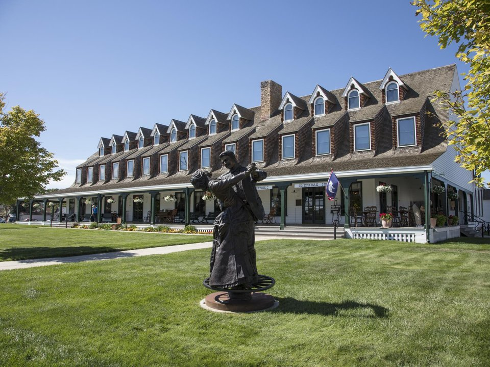

Downtown · Historic hotel
The Sheridan Inn
An 1893 inn on the National Register, once Buffalo Bill’s hangout.
Official details for The Sheridan InnSaddles, ranches and the Bighorns.
Sheridan is one of the West’s most authentic cowboy towns, with ranches all around, saddle makers on Main Street and the Bighorn Mountains rising just to the west. Land at Sheridan County, stay at the 1893 Sheridan Inn, where Buffalo Bill once auditioned acts for his Wild West show, browse King’s Saddlery and its free museum of saddles and Western gear, tour the Trail End mansion, and spend a few days at Eatons’ Ranch, one of the oldest dude ranches in the country.

Time illustration: direct distance at 150 KTAS plus 15 minutes for departure and arrival, matching the discovery page. Use ForeFlight for your actual flight plan.
KSHR, Sheridan County Airport, is a non-towered airport at 4,021 feet with an 8,301-foot main runway, about five minutes from downtown.
Sheridan County Airport, Sheridan, WY
Another FBO: Sheridan Pilots 307 (307-365-2626). Strong winds off the Bighorns. No live fuel price is shown.
Mountain flying: high density altitude on summer afternoons, mountain wave and strong winds over the ridges, afternoon thunderstorms from July to September, wildfire smoke in late summer, and winter snow and icing. Consider a mountain-flying course before you go. About 1460 nm from Myrtle Beach: two long days each way with several fuel stops. Plan a week, or overnight on the way out and back.
Rates and availability need travel dates.
An 1893 inn on the National Register, once Buffalo Bill’s hangout.
Official details for The Sheridan InnAn all-inclusive dude ranch, one of the oldest in the West.
Official details for Eatons’ RanchHotels and ranches.
Sheridan Travel & Tourism for More places to stayReserve weekend dinners.
Seasonal cooking and craft cocktails downtown.
Official details for Frackelton’sSteaks and ribs.
Official details for Wyoming’s Rib & Chop HouseRestaurants in Sheridan.
Sheridan Travel & Tourism for More restaurantsThe Bighorns are cool even in July.
This prototype links to the local visitor site. It does not yet match events to your travel dates.
A week of rodeo and Western events.
Sheridan Travel & Tourism for Sheridan WYO RodeoDude ranches open.
Eatons’ Ranch for Ranch seasonGolden aspens.
Sheridan Travel & Tourism for Fall in the BighornsCheck the local calendar when choosing a weekend, and confirm dates and tickets with the organizer.
A sample Sheridan weekend. This is a two-day flight each way; plan a week. No bookings or availability confirmed.
Land at KSHR mid-morning.
Lunch in town.
A short walk, then back to the airport.
Land at KSHR, subject to weather, density altitude and your actual flight plan.
Main Street and King’s Saddlery.
Dinner at Frackelton’s.
Drive into the Bighorns.
Trail End mansion.
Drinks and dinner at the Sheridan Inn.
Breakfast downtown.
Compute takeoff performance and allow time at the FBO.
Mountain afternoons bring wind, turbulence and storms; leave early.
The main sight.
Explore.
Dinner in town.
These details make the difference between an appealing list and a usable getaway.
Lodging or ranch first.
About 1,460 nm from Myrtle Beach: two long days each way.
Gusty afternoons are common.
June to September.
Picks and links reviewed by WingAway Weekends. Hours, prices, menus and availability change often, so confirm directly with each place before booking. Spotted something out of date, or have a favorite we missed? Email us at hello@wingawayweekends.com.
WingAway Weekends helps you discover the destination. Use ForeFlight and current official aviation information for route, performance, weather, NOTAMs and preflight decisions. Flight planning and PIC responsibility stay with the pilot.